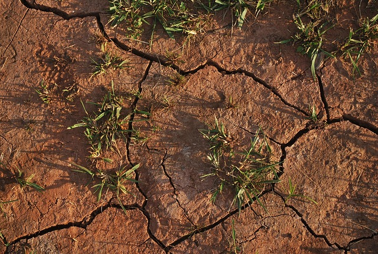
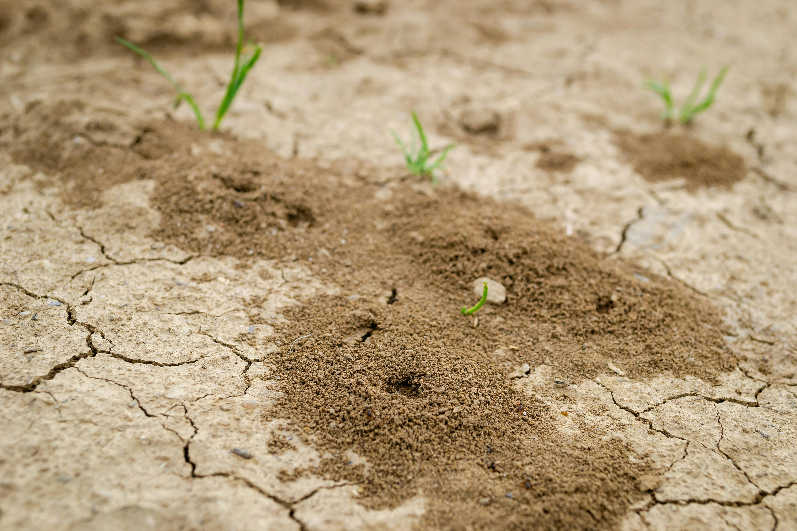
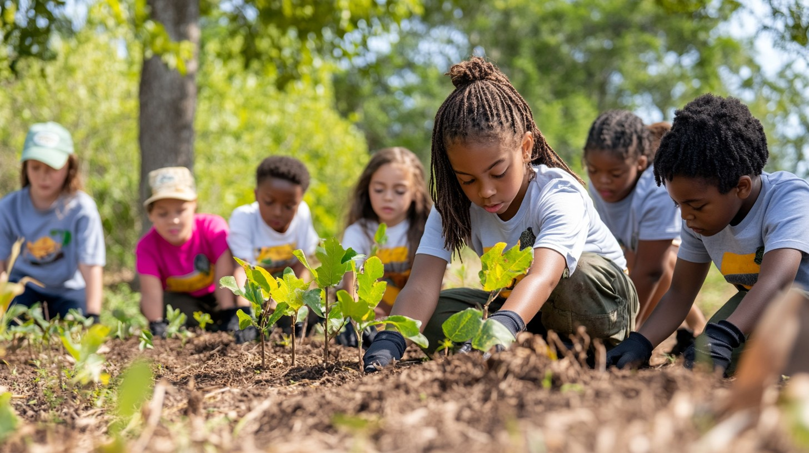

Introduction
Desertification and land degradation are some of the most pressing environmental issues facing the world today. Desertification occurs when fertile, productive land gradually transforms into barren desert, often as a result of unsustainable agricultural practices, deforestation, overgrazing, and the impacts of climate change. Land degradation is a broader term that refers to the decline in land quality, including soil erosion, reduced soil fertility, and loss of vegetation cover. These problems are particularly severe in arid and semi-arid regions but can affect ecosystems worldwide. As land continues to deteriorate, biodiversity is lost, agricultural productivity declines, and millions of people are left vulnerable to food insecurity and poverty. Desertification not only disrupts local communities but also contributes to global environmental challenges, including the acceleration of climate change. Preventing land degradation and restoring degraded ecosystems are critical for achieving sustainable development and protecting the planet’s natural resources for future generations.
Why it Matters
Desertification and land degradation matter because they directly threaten food security, water availability, and the overall well-being of millions of people across the globe. As fertile land becomes dry, cracked, and barren, farmers struggle to grow crops and raise livestock, leading to hunger, poverty, and economic hardship. These conditions force many communities, particularly in vulnerable regions, to migrate in search of better living conditions, increasing urban overcrowding and social tensions. Land degradation also accelerates the loss of biodiversity, as plants and animals that depend on healthy ecosystems struggle to survive. Furthermore, degraded land contributes to climate change by releasing carbon stored in soil and reducing the planet’s ability to absorb greenhouse gases. Desertification doesn’t just affect distant, rural areas—it has global consequences, impacting food prices, stability, and environmental health. Addressing these issues is essential to protect ecosystems, combat climate change, and ensure a sustainable future for all.
Solutions
- Sustainable Agriculture - Promote farming techniques like crop, reduced chemical use, and organic fertilizers to maintain soil health.
- Reforestation and Afforestation - Plant trees and restore forests to prevent soil erosion, improve moisture retention, and restore biodiversity.
- Soil Conservation Techniques- Implement methods such as terracing, contour ploughing, and the use of cover crops to protect soil structure.
- Water Management- Introduce efficient irrigation systems like drip irrigation and rainwater harvesting to reduce water waste and soil degradation.
- Combat Overgrazing- Manage livestock grazing patterns to prevent vegetation loss and allow land to regenerate naturally.
- Community Education- awareness among local communities about sustainable land management and the long-term benefits of conservation.

Take Action
Desertification and land degradation are global problems, but every individual, community, and government can help take action. First, governments must enforce strong land protection policies, support reforestation programs, and promote sustainable farming practices. Local communities can organize tree planting events, practice responsible land use, and educate others on protecting natural resources. Farmers should adopt soil conservation methods, use water wisely, and avoid overgrazing. Individuals can support environmental organizations working to restore degraded lands, reduce food waste, and raise awareness about the impacts of land degradation. International cooperation is also vital, as desertification affects ecosystems, food security, and climate across borders. By working together, we can restore degraded land, prevent further desertification, and secure healthy ecosystems for future generations.
